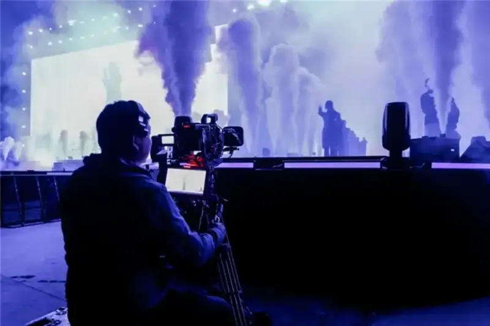
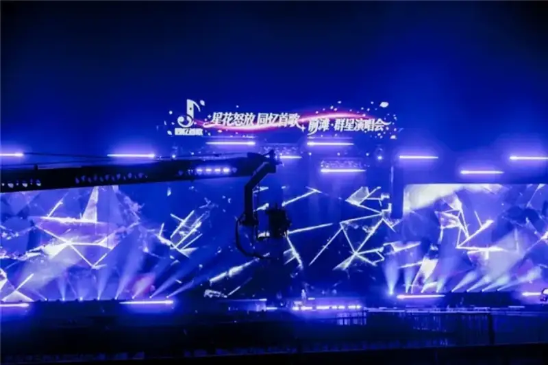
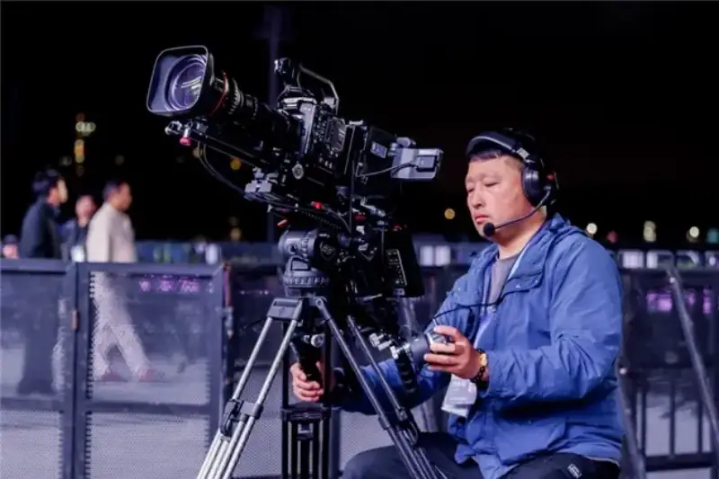
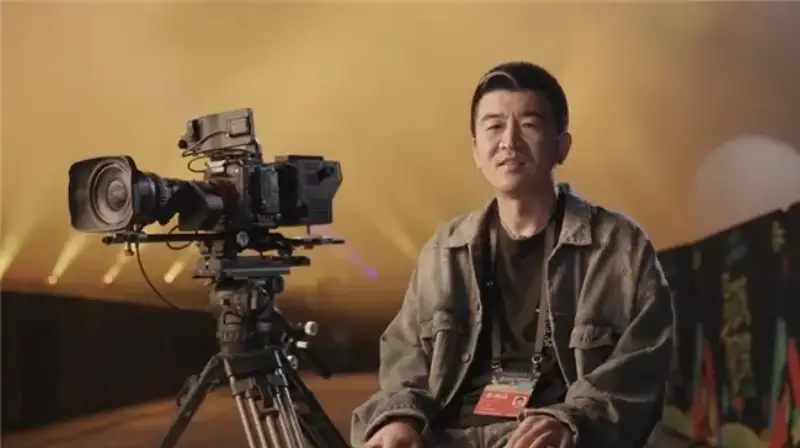
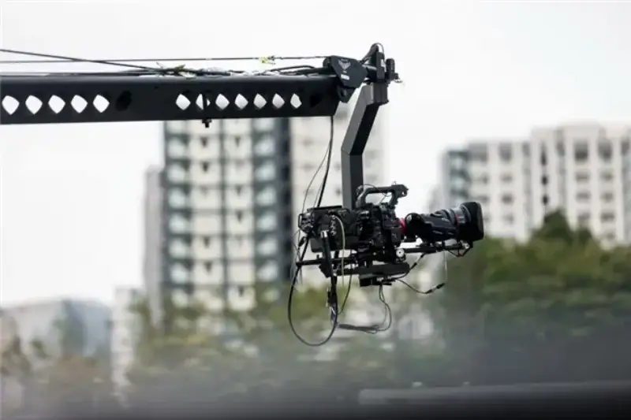
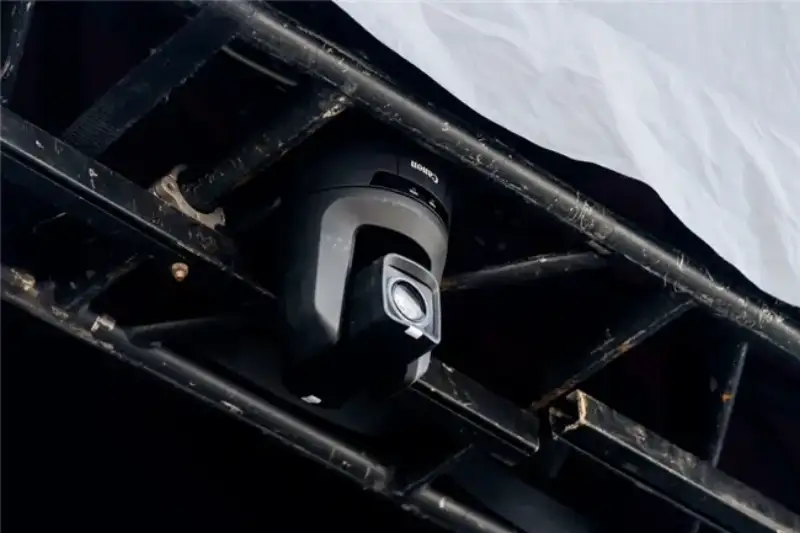
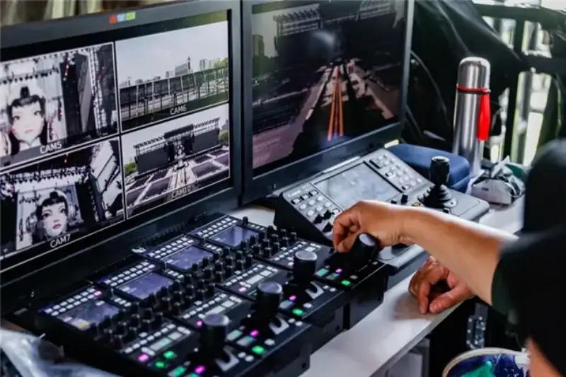
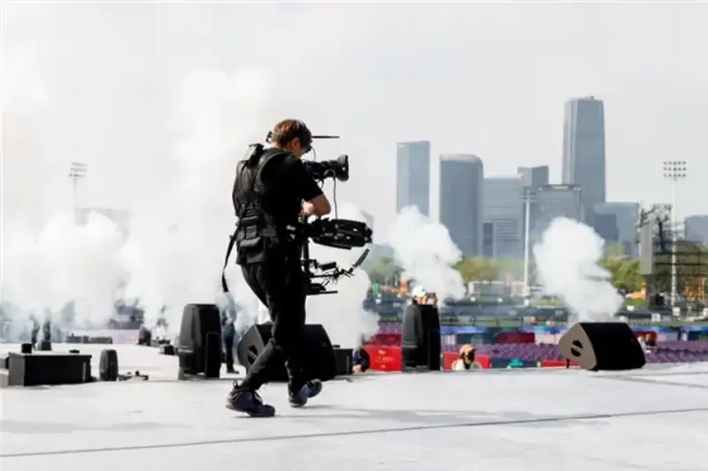

On April 25, 2026, the Star Bloom: Same Song Memories - Qiantan All-Star Concert closed at the Qiantan Sports Park in Shanghai. The concert draws on a classic show from more than 20 years ago. As a refreshed classic IP, it aims to be a musical event for the whole family, and to bring back memories of the era. It uses well-known classic melodies as an emotional entry point, and it brings the shared memory of all ages back to the stage, for a cross-generational audio-visual feast.
To catch this cross-generational emotion, the concert built an imaging system around the Canon Jia Zhi Bo PRO cinema-camera live solution. The system centers on the Canon EOS C400 cinema camera, with 10 camera positions and the Canon lens ecosystem. It shows the strength of cinema cameras in live production through a more cinematic, artistic visual language. It also shows the pro streaming industry moving toward film-like, immersive, content-driven production.

The Canon Jia Zhi Bo PRO, with the EOS C400 live system, supported the live production of Star Bloom: Same Song Memories
The Star Bloom: Same Song Memories is an all-star concert for all ages. It is not a single stage built around one artist. It holds a wide span of acts in one show. Between acts, the music style, mood, and stage pace keep changing. The streaming system must do more than cover the stage. It must keep the visual logic, the focus on people, and the overall unity through fast cuts. At the same time, the open Qiantan Sports Park raised the bar. Compared with an indoor venue, a large open space adds harder challenges in camera placement, long-range staging, signal links, and multi-camera coordination.

On site, the Canon Jia Zhi Bo PRO used several cine servo lenses such as the CN7x17 across jib, fixed, and other positions
Facing these challenges, the Jia Zhi Bo PRO is a complete, advanced live solution built on a camera channel system. For the large scene, deep space, and many angles of an outdoor concert, it was built across several dimensions: from cinema cameras, to Canon-native lenses, to a channel-based fiber link. It joins the strengths of each device into one system, and that system-level base supported the outdoor venue and completed the live production.
CanonCinemacameraimage qualityand color science，to buildstage space and layered people
The direct change from the Jia Zhi Bo PRO is that cinema-camera image power now enters large live streams. The system, centered on the EOS C400, keeps natural space layers and clear subject relations even under complex light. This gives a better visual hold on the scale of the stage, the state of the artists, and the shifts in emotion.

Facing complex light and high-contrast stage lighting, the Canon Jia Zhi Bo PRO steadily reproduced the live mood
Leng Quan, the director of the Star Bloom: Same Song Memories, said in an interview: Canon's color reproduction on site, and its skin tones for the artists, help a lot to convey the mood of the stage. For an all-star concert with a wide span of acts, this image power means more than looking better. It lets the stream both show the stage and catch the small moments of a performance.

Leng Quan, the director, said Canon's color strength renders artist skin tones very well
Integrate many types of lenses, usingthe native ecosystem strengthto widen the staging range
The project used 10 positions on site. They covered fixed cameras, a jib, roaming cameras, a Steadicam, and PTZ (pan-tilt-zoom) cameras. Each position had its own role. With frequent act changes and artist staging, the directing team still had enough room to choose shots. This also proved that the system is mature for large-space live production.
The positions that cover the wide stage and pull medium and long shots of the subjects are four box-lens positions with the Canon UHD-DIGISUPER 122 and UHD-DIGISUPER 111. Some fixed positions use wide and standard cine servo zooms. They work with the jib to set up space, link scenes, and change the pace. The roaming and Steadicam positions use the CN5x11 IAS T cine servo zoom. Paired with the EOS C400, they use autofocus to catch close details of artists and the audience while moving fast. PTZ (pan, tilt, zoom) positions use the Canon CR-N700 to add more angles. This setup gives the director and camera team more room to organize shots as the acts change. For a concert with fast cuts and rich stage expression, a fuller lens ecosystem means the stream is less limited by the gear. Since all bodies and lenses are Canon-native, the color style is highly unified, which greatly improves the color of the live production.




Box long lenses, cine servo lenses, and PTZ positions worked together to give the concert more room for staging
Seamless linkwith broadcast systems, balancing production speed and on-site fault tolerance
An advanced system matters, but the key is whether it links seamlessly into the existing workflow. The core value of the Jia Zhi Bo PRO is that it keeps the logic of traditional channel production while bringing cinema-grade image power directly into live production. Operators do not have to change their habits to get a cinematic output.
For camera operators, the zoom and focus servo handles are the familiar control. For the switcher, an RCP (Remote Control Panel, remote control panel) and the Canon RC-IP1000 controller allow remote parameter changes and unified multi-camera management. At the same time, the Jia Zhi Bo PRO joins return feeds, intercom, tally, and power in one cable link. This cuts the complexity of on-site setup and communication, and it makes high-density multi-camera work more efficient.

The Canon Jia Zhi Bo PRO uses an RCP and the Canon RC-IP1000 to improve unified multi-camera management
Chang Wei, the director of photography for the Star Bloom: Same Song Memories, said in an interview: This system works like a traditional channel camera. You still use the familiar zoom and focus handles for the main control, so it is very direct to pick up. For a concert stream with a fast pace, tight teamwork, and low fault tolerance, this smooth entry is itself efficiency.
Chang Wei, the DP, shared his experience with the Jia Zhi Bo PRO system on site
Auto and manual assist run together to ease focus pressure under complex light
In practice, the Jia Zhi Bo PRO also adapts well to the needs of each position. The roaming and Steadicam positions do highly mobile follow shots. In fast movement and complex stage relations, autofocus eases the focus pressure on the operator, so they can focus on framing and movement. Operators said after the show that the improvement was clear, and it helped directly in the high-frequency moving of a concert.
On the other PL-mount servo positions, manual control is still the main way. Here, the focus guide gives very useful help. Compared with relying only on focus peaking, it is easier to read on site, and it helps operators focus accurately and fast. Running auto and manual paths together also makes the whole system more practical on a complex set.

Autofocus lets roaming positions keep a steady follow shot and accurate focus through high-frequency moving
For a large concert, full coverage is only the base. What decides the viewing experience is whether the system conveys the stage scale, the state of the people, and the live mood at the same time. The Star Bloom: Same Song Memories showed this fuller ability to reproduce the event. The full set of positions covers the stage well, and the full lens ecosystem makes angles and cuts flexible. The cinema-grade texture of the EOS C400, and Canon's color science, build a clearer, more beautiful relation between people, space, and mood. Under complex light, the steady color, unified multi-camera look, and rendering of people make the visual style of the whole show more complete and believable.

The Canon Jia Zhi Bo PRO gave a fuller presentation of the layers and stage force of the concert
The close of the Star Bloom: Same Song Memories proved that the Jia Zhi Bo PRO can use a full set of positions in outdoor venues such as concert grounds. This live production supported a high-standard all-star concert, and it gives a useful sample for further joining large-venue live production with Canon cinema cameras.
*1. For clarity, Canon in this article may refer to Canon China Co., Ltd., Canon Inc., or the Canon brand.
Disclaimer: the market carries risk, and choose with care. This article is for reference only and is not a basis for any purchase.